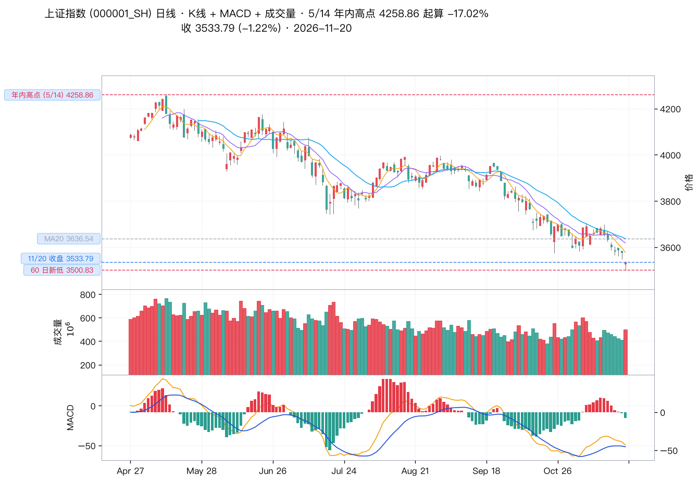
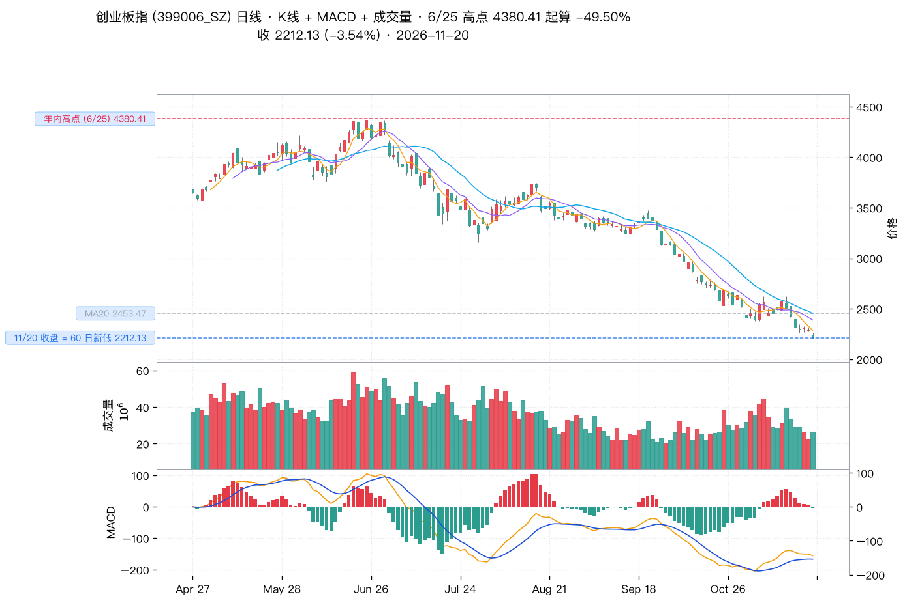
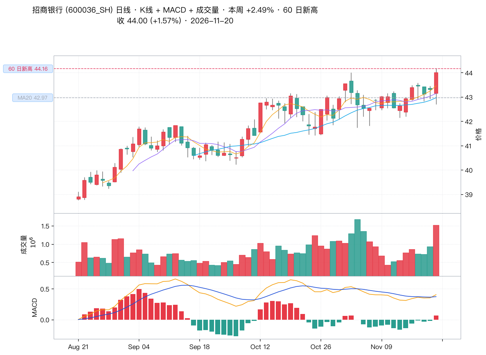
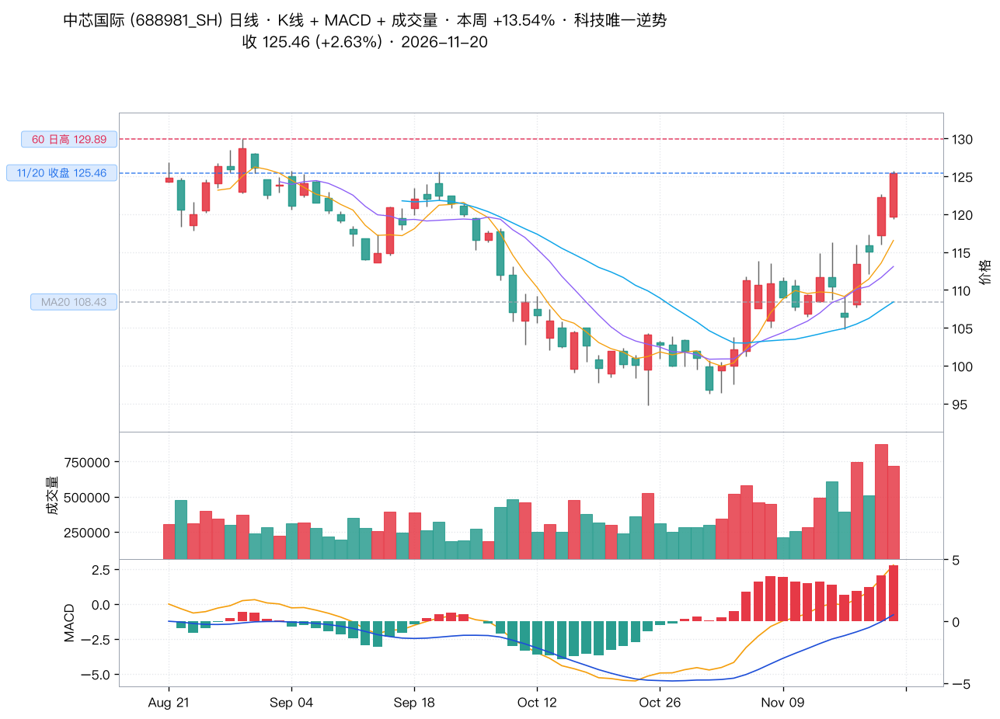
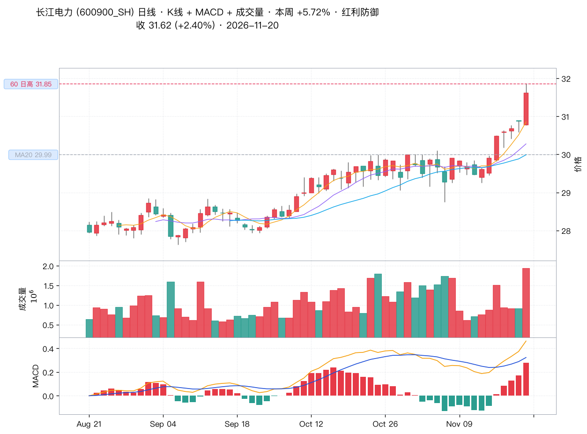

🔴 她周末把下跌归因于两条顶部，点位都对得上：上证 2026 年内最高 4258.86（5/14），她记 4256；创业板 4380.41（6/25），她记 4380。从顶部起算，上证 −17.02%、创业板 −49.50%。
但「天天喊风险」与她本周自己的原话不符：11/17 还在说「2263 点可以了，等吃肉」，11/20 抄底失败才改口「抄C5抄成股Z」。
→ 下周只做银行/红利，科技不接反弹。
| 时间 | 原文 | 判读 / 实测 |
|---|---|---|
| 11/21 18:01 | 你全家满仓科技股成为了2026年下半年最“毒”的一句话！ | 方向一致：科技池全周 −4.74%（GPU/算力）至 −17.75%（交换机）。她把 11/19 自己点名的科技方向归为「毒」。 |
| 11/21 20:05 | 大盘指数实现4256之后我天天喊风险，创业板指数试4380之后我提示构筑三川顶，警惕科技股泡沫破灭 | 两个点位都对上了（见第二节）；「天天喊风险」与她本周原话冲突，见第六节。 |
| 11/21 20:18 | （鸽子经济学：拉高价格—卖出还债—低位买回） | 流动性比喻，非标的信号。可读作她对「高位减持、低位回购」的解释，不构成买点。 |
| 11/22 06:14 | 清盘线己经破！（转发但斌「一觉醒来血雨腥风」） | 外部私募事件，行情数据核不了 —— 记为事件，不当信号。 |
| 11/21 20:08 / 06:35 | 这市场，大波动，我都经历了七八个轮回 / 小雪安康 | 纯情绪，无方向。 |
上证 4258.86（2026-05-14 盘中最高），她记 4256，差 2.86 点（0.07%）；创业板 4380.41（2026-06-25），她记 4380，差 0.41 点。两条顶部都成立，这是本期最硬的一条核验。

5/14 高点 4258.86 → 11/20 收 3533.79，−17.02%；收盘 3533.79、60 日新低 3500.83。

6/25 高点 4380.41 → 11/20 收 2212.13 = 60 日新低，−49.50%（腰斩级）。
| 板块 | 本周实测 | 博主口径 / 下周打法 |
|---|---|---|
| ① 银行 / 红利 | 周 +4.74% · 6 只 6 涨 · 工行 +6.21%、农行 +5.43% | 全周唯一「大池全线红」。她 11/20 点名工行、建行改写新高，本周继续走强。只做银行 + 高股息，不碰题材。 |
| ② 半导体设备 | 周 −2.40% · 5 涨 5 跌 · 拓荆 +6.99%、中微 +6.34% | 均值被万业 −20.10%、精测 −16.60% 拖累，龙头全红 → 只做龙头，不碰池平均。 |
| ③ 煤炭 / 铁路 | 煤炭 +3.17%、铁路 +2.84%（各 3/4 涨） | 低波红利补涨。注意 11/20 申万煤炭 −1.57%（4 涨 33 跌）= 大票护盘、行业仍跌，只当防御垫。 |
| 回避 | 交换机 −17.75%、GPU/CPU −15.06%、CPO −14.98%、存储 −13.97%、先进封装 −10.88% | 她的 C5 抄底标的：海光 −19.21%、燧原 −40.90%、长鑫 −12.06%。这些不是回调，是趋势下跌。 |
| 代码 / 名称 | 收盘 · 周涨跌 | 关键位 | 动作 |
|---|---|---|---|
| 600036 招商银行 | 44.00 · +2.49% · 65.8 亿 | MA20 42.97 · 60 日新高 44.16 | 她点名方向的流动性龙头。不破 MA20 持有，破位减仓。 |
| 688981 中芯国际 | 125.46 · +13.54% · 88.3 亿 | MA10 113.10 · MA20 108.43 · 60 日高 129.89 | 她未点名，按实测入选：科技唯一逆势。回踩 MA10 可分批，破 MA20 离场。 |
| 600900 长江电力 | 31.62 · +5.72% · 60.5 亿 | MA20 29.99 · 60 日高 31.85 | 她未点名，红利防御垫。只补不加仓，跌破 MA20 先撤。 |

周 +2.49%；11/20 最高 44.16 = 60 日新高，收 44.00 站上 MA20 42.97。

周 +13.54%；收 125.46 站上 MA20 108.43，60 日高 129.89 在头顶 3.4%。

周 +5.72%；收 31.62，MA20 29.99，距 60 日高 31.85 仅 0.7%。
| 博主口径 | 实测 / 处理 |
|---|---|
| 「天天喊风险」（11/21 20:05） | 不一致：11/17「本周 2263 点可以了，接下来等吃肉了」、11/19「封装，光刻胶，半导体设备等局部走红」、11/20 抄 C5 —— 本周是喊多与抄底，不是喊风险。她自己 11/21 06:37 也认了「抄C5抄成了股Z」。 |
| 「4256 / 4380」（11/21 20:05） | 分毫不差：上证 4258.86（5/14）、创业板 4380.41（6/25）。 |
| 「满仓科技股是最毒的一句话」（11/21 18:01） | 方向一致：科技池全周 −4.74% 至 −17.75%。 |
| 「清盘线己经破」（11/22 06:14） | 无法核验：指向但斌产品，属外部私募事件，非行情数据。 |
其余 2 条为纯情绪（20:08「七八个轮回」、11/22 06:35「小雪安康」），不计入核验。
采集：weibo skill 两轮补采 11 条（11/21 06:06 – 11/22 06:35）；行情：Tushare Pro 日线（前复权），数据基准 11/20 收盘 —— 11/21、11/22 为非交易日，周末版不产生新行情。板块周均按池内成员 11/13→11/20 收盘计算。
免责声明：公开微博整理 + 技术面统计，不构成投资建议；「3 板块 + 3 个股」为博主观点 + 实测强度归纳。